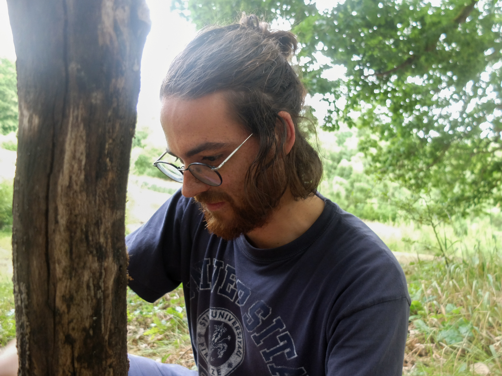

Fonctionnement participatif
Le caractère participatif, c’est un des piliers de ce Premier Opus : on veut que tout le monde puisse s’approprier ces trois jours au maximum et s’investir dans la réalisation de ce festival.
Rien d’insurmontable, bien au contraire, il s'agit des petites tâches qui vont nous permettre de développer une vraie vie commune. On demande à chacun-e de prendre un créneau qui dure plus ou moins longtemps suivant les services mais jamais plus de deux heures et souvent moins. A toi de voir ce que tu préfères entre filer un coup de main à la cuisine, accueillir les gens, servir des bières ou des repas.
Comment s'organiser ? S'y inscrire ? Rien de plus simple, il suffit juste de suivre ce lien, une fois votre adhésion et votre place prise :
https://docs.google.com/forms/d/e/1FAIpQLSdW70pFAW4k9Mtf7-XfghQwOjPH6aDZVGuj7QT7smoVGgGhaA/viewform?usp=pp_url
Le lieu
Organisation du lieu
- Un grand lieu "camping" pour pouvoir poser sa tente au plus grand des calmes 🏕️
- Les "douches" et les "toilettes" accessibles sans être juste sous notre nez au réveil 🧻
- Un bar situé stratégiquement près de la scène 🍹
- Une scène située non loin du bar, mais surtout orientée vers les champs 🔊
- Une intendance qui jouxte l'amphi, lieu pour se réunir/manger/écouter des contes/regarder des spectacles 👀
- Un point accueil/infos pour... accueillir et informer ❓
- Un coin infirmerie près de l'entrée afin d'en maximiser l'accessibilité pour d'éventuels secours ⛑️